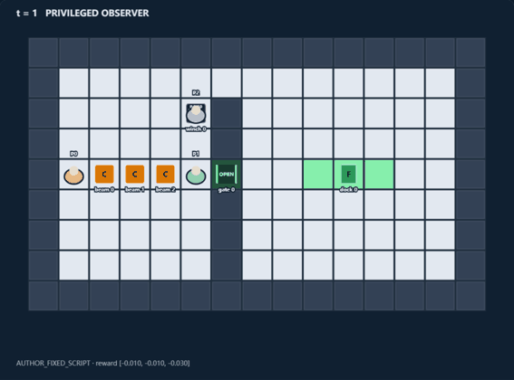
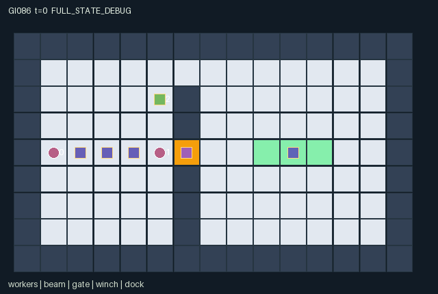

GI086 / SPATIAL
同步龙门
横梁两端须同步移动或旋转；第三名工人可维护共享液压、闸门并参与换位。
Original saved demonstration
Recorded native state, often authored scripts or interventions; information scope and failures are preserved in the original provenance. This is a saved demonstration, not live browser play.

Release verification episode
Untrained uniform legal actions. Actual JAX state sampled along the full original episode; full-state debug camera. No human performance or learning claim.

Run this game
crucibles play --game 86
Start Python locally, then open the address printed by the terminal. Installation, multiplayer, takeover and keyboard controls →
Objective, rewards & ending
Exact task contract
{
"objective": "Deliver the actual three-cell beam horizontally with center [10,4] before a jam or the 80-step bound.",
"natural_termination": "Success at the horizontal dock; failure if the timer closes while any worker or beam cell occupies [6,4]. Success excludes a jam.",
"interaction": "Two distinct gripped ends require equal motion or rotation commands; a third worker can recharge the shared pool, refresh the gate, block geometry or exchange roles.",
"observation_access": "Public fixed map and all dynamic gameplay state are visible to every role; observer identity is appended. There is no privileged renderer-only task information."
}Declared per-step reward bounds: -6.0 to 9.0. Observability: fully_observable.
Rules
- Grip the two handles two cells from the beam center. Both carriers must choose the same direction or quarter turn.
- The beam occupies three real cells. Translation costs one shared pressure unit; rotation costs two and needs a clear 5x5 swept square.
- A free worker exactly at the winch pumps three charge units, capped at ten, and refreshes the shutter to four turns.
- The shutter timer decreases before movement. Closing on a worker or beam cell causes a terminal jam.
- The center aperture is narrow; an open northern route at y=1 uses more movement. Workers and cargo can obstruct each other.
- Deliver a horizontal beam to center [10,4]. Every live turn costs 0.01; pumping costs its worker another 0.02.
- All roles receive +8 on delivery or -5 on a jam. The public scene is the actual state; witness scripts have not been run.
Original mechanism document (historical status wording retained)
# Lockstep Gantry **Status: AUTHORED_NOT_EXECUTED.** A cooperative workshop game in which a five-cell-long carrier/beam assembly must negotiate a narrow shutter or a longer northern bypass. The tender is a spatial worker with the same potential jobs, not an out-of-world gate switch. ## Rules and real cross-agent dependencies The beam is three cells long. Its two handles are at center plus/minus two cells along its current axis. TOGGLE GRIP attaches a free worker standing on a handle, or releases an attached worker. Exactly two distinct handle holders must issue the same cardinal command to translate the beam, or both issue QUARTER TURN to rotate it. A disagreement or a single remaining holder leaves it in place. The carrier positions move with the accepted beam geometry; they are not decorative positions. PUMP requires a free worker exactly at [5,2]. It adds three shared pressure units, capped at ten, and resets the shutter timer to four before the proposed cargo motion is checked. Other turns decrement the timer by one. A translation spends one pressure unit, and a rotation spends two. Rotations require a clear full 5x5 swept square, including all walls and noncarrier workers, so a pole cannot simply pivot through a wall. A move can consume charge a partner needed later or put its handle across another worker's route. The wall at x=6 has the shutter at y=4 and an open northern bypass at y=1. Only a horizontal assembly fits through the central aperture. The bypass trades extra charge and travel for avoiding shutter expiry. Role exchange is possible by releasing and walking to an available handle, but the released assembly does not move under one remaining carrier. The tender can intentionally or accidentally block a destination or rotation sweep. These mechanisms create joint-command, geometry, timing, job-allocation and common-resource dependencies within the transitions. A closing shutter on any worker or beam cell ends the episode as a jam, including a carrier whose handle is still passing through. Arrival means horizontal center [10,4] and no jam. The dock target is a game objective, not an experimental acceptance threshold. ## Kernel, information and rewards A=3, O=40, U=8, H=80. Coordinates are integer [x,y], with y increasing downward. All state leaves are fixed-shape int32, float32 or bool arrays; all observations and rewards are float32. Reset is deterministic and starts at horizontal center [3,4] with six pressure units, ungripped workers [1,4], [5,4], [5,2], and a closed shutter. All dynamic state needed to interpret the task is public. Static map layout is explicitly public in the manifest; the map is not inferred from an unobserved leaf. Each live step handles grip changes, pumping and timer decrement, agreement/clearance and cargo motion, then free-worker movement and terminal assessment. Ordinary walking cannot enter another worker's old cell, including a cell the other worker will vacate, and all contenders for the same free destination are blocked. Thus there are no swaps or overlaps. A noncarrier's departure does not retroactively clear the cargo's earlier geometry test. This conservative simultaneity rule is part of the game. Rewards are -0.01 per role per live step, an additional -0.02 for the pumping role, +8 to every role on delivery, and -5 to every role on a jam. The declared [-6,9] envelope covers all possible one-step rewards. Coordinates, identity, grip, pressure, timer, clock, terminal causes and event bits are encoded into exactly 40 float32 columns in [0,1]. The binding addendum is implemented: a live input advances the scalar int32 clock by one; natural completion takes priority over the horizon. Already-terminal raw calls preserve the complete state, observation, clock, terminal causes and final event flags, return zero rewards and all-true dones. They are not extra gameplay transitions. The only legal terminal action is WAIT. Autoreset belongs to an external wrapper. No individual is removed from the world before joint completion. Invalid or out-of-range actions become WAIT; blocked cardinal directions remain legal attempted movements and may produce no motion. Each observation slice, entity position, active mask, visibility mask and displayed attribute is declared in manifest.json. scene.json repeats exactly the hash-bound map and declared channels. Its motion comes only from real state positions. A debug full-state view must remain distinct from role views. Public event channels are explicitly present in each role observation; local object/agent attributes are zero-masked together with a visible bit. A hidden entity is not a position hint. ## Literal source evidence - Physical length and coordinate construction: candidate.py:L19 — `return center + jnp.arange(-1, 2, dtype=jnp.int32)[:, None] * unit` - Two distinct cooperating ends: candidate.py:L125 — `ready = ready & jnp.any(grip == 0) & jnp.any(grip == 1)` - Equal commands are required: candidate.py:L127 — `agreement = jnp.all(~crew | (a == command))` - Third-party supply changes the shared resource: candidate.py:L120 — `pressure = jnp.minimum(10, s["pressure"][0] + 3 * jnp.sum(pump.astype(jnp.int32)))` - Third-party pump refreshes the actual timer: candidate.py:L121 — `timer = jnp.where(jnp.any(pump), 4, jnp.maximum(0, s["gate_timer"][0] - 1))` - Physical swept-clearance constraint: candidate.py:L145 — `rotation_clear = jnp.all(self.clear(s, sweep, gate_open)) & ~sweep_block` - Common resource and agreement jointly gate motion: candidate.py:L147 — `operated = ready & agreement & (translate | rotate) & (pressure >= cost)` - Terminal consequence of a missed pump: candidate.py:L167 — `jammed = (~gate_open) & in_gate` - Actual task completion: candidate.py:L168 — `success = jnp.all(center == s["dock_pos"][0]) & (axis == 0) & ~jammed` - Natural-priority terminal bound: candidate.py:L171 — `truncated = (t >= self.max_steps) & ~terminated` Method extents in this exact source: - `direction`: candidate.py:L12-L15. - `cells`: candidate.py:L17-L19. - `handles`: candidate.py:L21-L23. - `clear`: candidate.py:L25-L31. - `reset`: candidate.py:L33-L72. - `observe`: candidate.py:L74-L94. - `legal_actions`: candidate.py:L96-L106. - `advance`: candidate.py:L108-L194. - `absorb`: candidate.py:L196-L199. - `raw_step`: candidate.py:L201-L202. ## Fixed witnesses and intended intervention differences The main fixed script is an eight-transition whole-task attempt. The missed-refresh pair differs in one tender action, then uses the same carrier commands; it is intended to expose a delayed failure rather than merely a different immediate reward. The disagreement script is local and stops before delivery. No scripted outcome is an execution receipt. A successful-looking path in prose is only a prediction from the rules. Scripts that exercise local mechanisms intentionally do not assert whole-task completion. ## Invariants, variation and limits Declared invariants include unique worker positions and nonnegative clock, hydraulic charge, shutter timer and translation count. Construction additionally keeps charge at most 10, timer at most 4, the three cargo cells contiguous, the two attached handle roles distinct, and every occupied cell inside the workshop and off solid walls. A closed gate may coincide with the final jam state by design. Altering aperture locations, dock orientation, pressure capacity or pump lifetime would change routing and job-allocation decisions, but no such variants or transfer results are implemented or measured here. Integer sign-bearing fields (for example no-owner=-1) remain exact int32 values. There is no design-specified int8 distribution to adapt. The external uint32 PRNG key is not duplicated as a state leaf. This particular world is deterministic; reset and step accept keys for the fixed pure interface without consuming them. ## Provenance and reference use This is an original authored kernel for initial window0, attempt00, in the train source stream. No prior candidate, project execution result, heldout layout, evaluation score, ranking or final test was read. No candidate or JAX was imported or run. The action lists are fixed hypotheses, not recorded trajectories. Interface/R0 checks, numerical parity, actual legality along the scripts, intervention replays, animation, training, solvability, optimality, strategic richness and meta-learning effects remain unestablished. Only supplied official references were used. JaxMARL's README informed the intended simultaneous multi-agent adapter boundary (agent-keyed dictionaries and __all__ belong in the later integration layer). Pgx's README informed the separation of explicit transition keys, legal masks and raw terminal state. Craftax's README informed the distinction between a world kernel, state-based rendering and an external reset wrapper. PureJaxRL is an algorithm implementation reference, not a game library; its performance statements are not evidence about this game. Craftax_Baselines/ppo_rnn.py was read only at its environment/reset wrapper interfaces; no PPO/network code or benchmark mechanics were copied. No upstream implementation or map is incorporated. These references are attributed in generation_record.json with exact supplied file hashes and upstream URLs. The copied community_delivery_requirements.json still lists IDs 82-85. The exact assigned design/request IDs 86-89 control this batch; the general interaction and presentation requirements are applied without rewriting that input. Actual dispatch identity, backend and usage evidence are retained by the coordinator, not invented here.
Commands
Roles & abilities
agent_0 initial west handle carrier; may release and change jobs
agent_1 initial east handle carrier; may release and change jobs
agent_2 initial pump tender; may move, take a handle or obstruct passage
Observation permissions
Training receives only the original observation rows. Role cameras use declared visibility; debug cameras are explicitly marked. Local benchmark records log debug exposure and role takeover history.
Exact observation layout
[
{
"slice": [
0,
6
],
"meaning": "All three worker [x/14,y/8] positions in identity order",
"visibility": "public"
},
{
"slice": [
6,
9
],
"meaning": "All grips encoded (grip+1)/2: free=0, negative end=0.5, positive end=1",
"visibility": "public"
},
{
"slice": [
9,
15
],
"meaning": "All three actual beam-cell [x/14,y/8] positions",
"visibility": "public"
},
{
"slice": [
15,
16
],
"meaning": "Beam axis: horizontal 0 or vertical 1",
"visibility": "public"
},
{
"slice": [
16,
18
],
"meaning": "Dock center [x/14,y/8]",
"visibility": "public"
},
{
"slice": [
18,
20
],
"meaning": "Winch [x/14,y/8]",
"visibility": "public"
},
{
"slice": [
20,
22
],
"meaning": "Gate [x/14,y/8]",
"visibility": "public"
},
{
"slice": [
22,
23
],
"meaning": "Shared pressure /10",
"visibility": "public"
},
{
"slice": [
23,
24
],
"meaning": "Gate remaining timer /4",
"visibility": "public"
},
{
"slice": [
24,
25
],
"meaning": "Gate open bit",
"visibility": "public"
},
{
"slice": [
25,
34
],
"meaning": "In order: t/80, done, success, jammed, cargo_moved, cargo_rotated, move_count/80, terminated, truncated",
"visibility": "public"
},
{
"slice": [
34,
37
],
"meaning": "Per-worker pump event bits from the last live transition",
"visibility": "public"
},
{
"slice": [
37,
40
],
"meaning": "Three-way observer identity one-hot",
"visibility": "self"
}
]Entity visibility & attributes
[
{
"id": "workers",
"kind": "agent",
"count": 3,
"position": [
"agent_pos"
],
"active": [
"agent_active"
],
"visibility": [
"agent_visible"
],
"attributes": [
{
"state_path": [
"grip"
],
"meaning": "Handle: -1 free, 0 negative end, 1 positive end",
"display": "category"
}
]
},
{
"id": "beam",
"kind": "object",
"count": 3,
"position": [
"cargo_pos"
],
"active": [
"cargo_active"
],
"visibility": [
"cargo_visible"
],
"attributes": [
{
"state_path": [
"cargo_axis"
],
"meaning": "Beam axis: 0 horizontal, 1 vertical",
"display": "direction"
}
]
},
{
"id": "gate",
"kind": "gate",
"count": 1,
"position": [
"gate_pos"
],
"active": [
"gate_active"
],
"visibility": [
"gate_visible"
],
"attributes": [
{
"state_path": [
"gate_open"
],
"meaning": "Open during this recorded state",
"display": "flag"
},
{
"state_path": [
"gate_timer"
],
"meaning": "Open turns remaining",
"display": "number"
}
]
},
{
"id": "winch",
"kind": "object",
"count": 1,
"position": [
"pump_pos"
],
"active": [
"pump_active"
],
"visibility": [
"pump_visible"
],
"attributes": [
{
"state_path": [
"pressure"
],
"meaning": "Shared hydraulic charge, capacity 10",
"display": "bar"
}
]
},
{
"id": "dock",
"kind": "landmark",
"count": 1,
"position": [
"dock_pos"
],
"active": [
"dock_active"
],
"visibility": [
"dock_visible"
],
"attributes": []
}
]Actual verification & provenance
Per-game execution receipt
{
"game": "gi086",
"status": "PASS",
"verification_revision": 2,
"source_sha256": "f1aed63c212284b84fd930524b3b404e66b775c0db0d550431329fe36664c0c2",
"seed": 20261101,
"runtime": {
"jax": "0.4.38",
"numpy": "1.26.4",
"devices": [
"TFRT_CPU_0"
]
},
"dimensions": {
"num_agents": 3,
"observation_size": 40,
"num_actions": 8,
"max_steps": 80
},
"checks": {
"eager_reset": {
"status": "PASS",
"seconds": 1.4572241306304932
},
"observation_spaces_legal_masks": {
"status": "PASS",
"seconds": 0.704453706741333
},
"eager_step": {
"status": "PASS",
"seconds": 0.9096877574920654
},
"jit_reset": {
"status": "PASS",
"seconds": 0.10052061080932617
},
"jit_step": {
"status": "PASS",
"seconds": 0.8329949378967285
},
"eager_jit_integer_parity_float_measurement": {
"status": "PASS",
"seconds": 0.0007238388061523438
},
"jit_vmap_reset": {
"status": "PASS",
"seconds": 0.14584088325500488
},
"jit_vmap_step": {
"status": "PASS",
"seconds": 1.163583517074585
},
"outer_autoreset_api": {
"status": "PASS",
"seconds": 0.9261353015899658
},
"full_original_horizon_episode_and_render": {
"status": "PASS",
"seconds": 1.7843506336212158
}
},
"human_scores": null,
"browser_controls": "PENDING",
"failures": [],
"elapsed_seconds": 8.757962942123413,
"float_parity_max_abs": 2.9802322387695312e-08,
"numerical_parity": "UNDETERMINED_NONZERO_FLOAT_DIFFERENCE",
"raw_terminal_absorbing": "PASS",
"terminal_outer_reset": "PASS",
"episode_steps": 80,
"scripted_random_returns": [
-0.7999999821186066,
-0.7999999821186066,
-0.8199999816715717
],
"terminal": true,
"demo_information": "FULL_STATE_DEBUG",
"demo_frames": 28,
"render_roles_checked": 3
}Chromium control verification
{
"game": "gi086",
"status": "PASS",
"human_scores": null,
"engineering": true,
"checks": [
"catalog_selected_and_real_native_reset",
"dom_queue_and_native_step",
"second_participant_ownership_and_native_joint_step",
"all_roles_individually_controllable_no_role_cap",
"explicit_debug_camera",
"release_to_pure_ai_without_reset"
],
"seconds": 3.585951566696167
}Original identity and file hashes
{
"id": 86,
"key": "gi086",
"title": "同步龙门",
"summary": "横梁两端须同步移动或旋转；第三名工人可维护共享液压、闸门并参与换位。",
"tags": [
"协同搬运",
"共享能源"
],
"family": "spatial",
"dimensions": {
"num_agents": 3,
"observation_size": 40,
"num_actions": 8,
"max_steps": 80
},
"source_sha256": "f1aed63c212284b84fd930524b3b404e66b775c0db0d550431329fe36664c0c2",
"manifest_sha256": "90e39aa87f5752248b50576c69cf9fd61c5bcf6bf50309f90629c7572556a0e9",
"files": [
{
"file": "candidate.py",
"sha256": "f1aed63c212284b84fd930524b3b404e66b775c0db0d550431329fe36664c0c2",
"bytes": 10807,
"origin": "work/exp_2/game_incubator_v3/community_games222_225_visualization_root222_v1/native154_candidate/registry/v2/games/game-v3-00086/candidate.py"
},
{
"file": "manifest.json",
"sha256": "90e39aa87f5752248b50576c69cf9fd61c5bcf6bf50309f90629c7572556a0e9",
"bytes": 12616,
"origin": "work/exp_2/game_incubator_v3/community_games222_225_visualization_root222_v1/native154_candidate/registry/v2/games/game-v3-00086/manifest.json"
},
{
"file": "scene.json",
"sha256": "6069ad7940d9642b1e4ca494a28ff67d8c8c82b364ade3effe79d1db1b5a4969",
"bytes": 7023,
"origin": "work/exp_2/game_incubator_v3/community_games222_225_visualization_root222_v1/native154_candidate/registry/v2/games/game-v3-00086/scene.json"
},
{
"file": "mechanism.md",
"sha256": "9297bbc4d9bf5c5e79f7807c7fc54ca1697bcc22ed98b559e96a195b1692b95d",
"bytes": 9667,
"origin": "work/exp_2/game_incubator_v3/sources/game-v3-00086/attempt_00/mechanism.md"
},
{
"file": "playthrough.json",
"sha256": "aef4b0c2c3b73182d1d3fe67a92a0eb27323991169d78fbebcd96d37181a4821",
"bytes": 4885,
"origin": "work/exp_2/game_incubator_v3/sources/game-v3-00086/attempt_00/playthrough.json"
}
],
"original_status": "NATIVE154_REFERENCE",
"original_saved_replay": true,
"release_validation": "PASS",
"human_scores": null,
"browser_validation": "PASS"
}